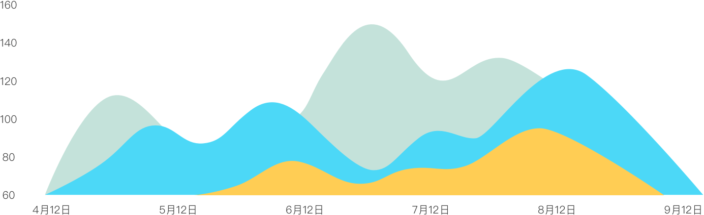

贴身守护家人健康

健康保健服务
解决家庭成员日常疾病预防、术后康复问题、季节性疾病治疗、常见老年疾病治疗

育儿保健服务
解决宝宝遇到的各种常见病、多发症，同时对于宝宝的生长发育、心理发育等幼儿问题给予科学的建议和指导

妇幼保健服务
解决青少年焦虑、白领职场压力、产后妈妈抑郁等心理困境，共同寻求摆脱困境的对策，缓解压力和焦虑情绪

高血压服务
指导通过非药物方式如食疗、运动、改善生活方式等控制血压；指导长期用药患者，科学用药，实时监测血压，预防心梗、中风等并发症

足不出户解决家庭常见病
使用我有医生APP，您可以快速与医生进行面对面的交流。通过医生为您提供的疾病病理分析与判断、健康建议及注意事项，使您可以足不出户的解决家庭常见疾病。
 视频咨询
视频咨询
 电话咨询
电话咨询
家庭健康档案
在您问诊后，我们将会为您及您的家人建立健康档案，您可以随时使用我有医生app随查询相关档案信息及健康数据。

本人

父母

配偶

兄弟

子女
健康数据管理
我有医生利用大数据技术，对您的健康数据进行分析，及时发现您身体健康的异常，对重大疾病进行预警。
特邀专家团队
医生是医疗服务的核心，我有医生为您提供专业的医疗服务，精心挑选医疗专家，覆盖主要医疗科室，一站式解决家庭疾病。

张之瀛
心内科／心血管内科专家
曾就职于清华大学第一附属医院，一直从事心内科病房、门诊、CCU、导管室的临床工作，对心内科多发病及常见病的诊疗及危重症救治有丰富的临床经验

李瑛
儿科／儿科主任医师
从事儿科临床工作二十余年，在儿内科常见病、多发病的诊疗方面有丰富的经验，2002年至今，主要从事高危新生儿的管理工作，在危重新生儿救治和管理方面具有较高水平

丁西来
妇科／妇产科博士
北京美中宜和妇儿医院和北京和睦家医院特聘专家。妇产科博士，原北京协和医院妇产科副主任医师，师从北京协和医院妇产科主任沈锵教授
一人付费，全家使用
您可以添加包括自己在内一共五名家人，全家都可以使用您的帐号享受我有 医生的服务